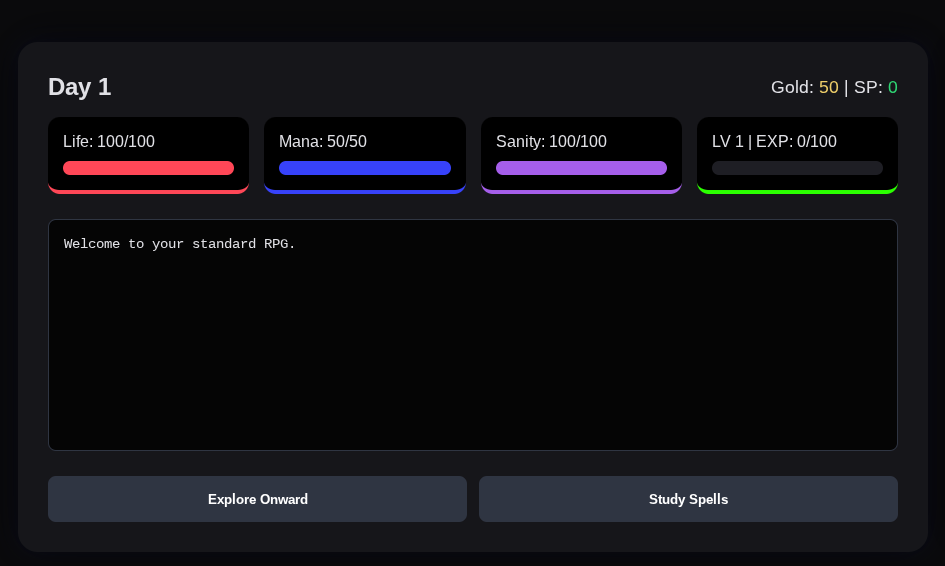
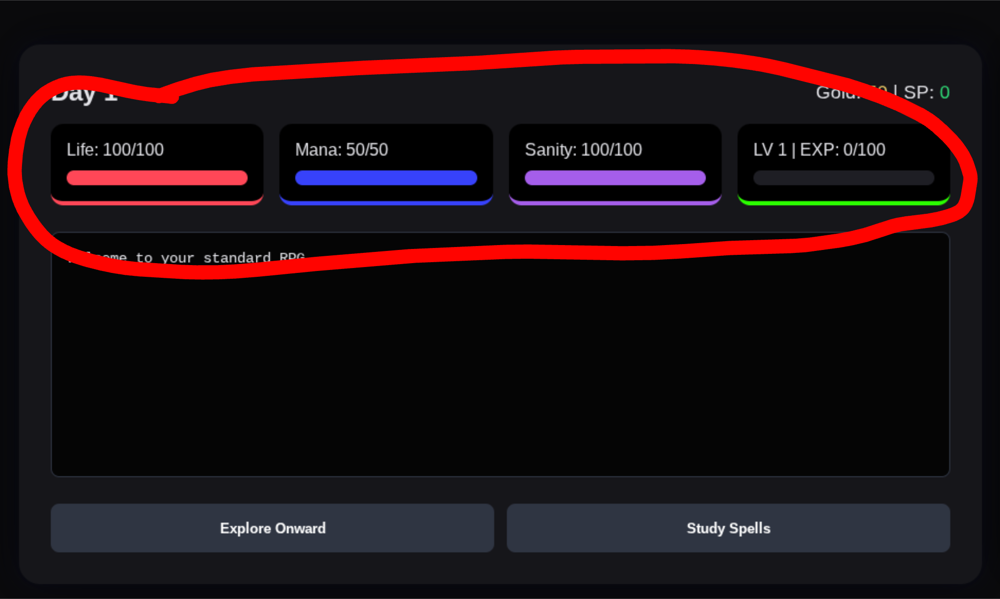
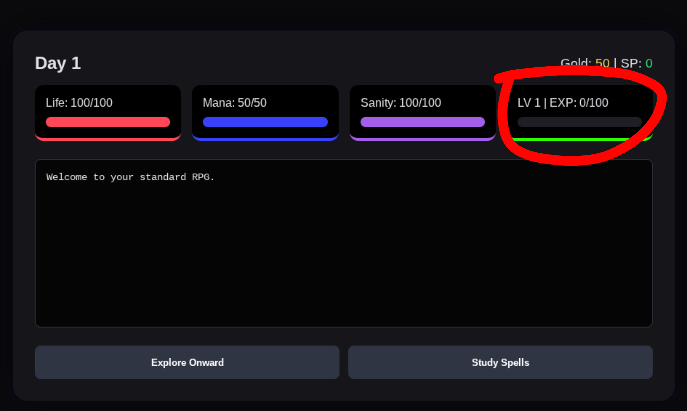
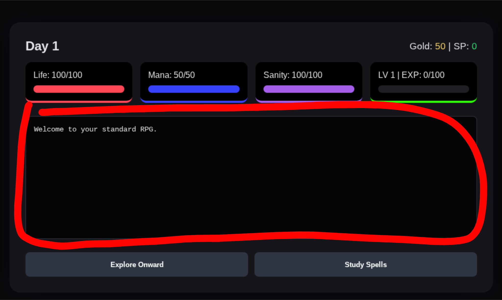
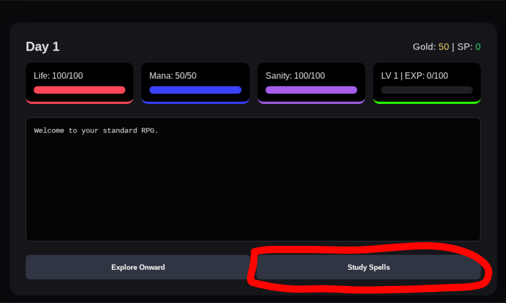
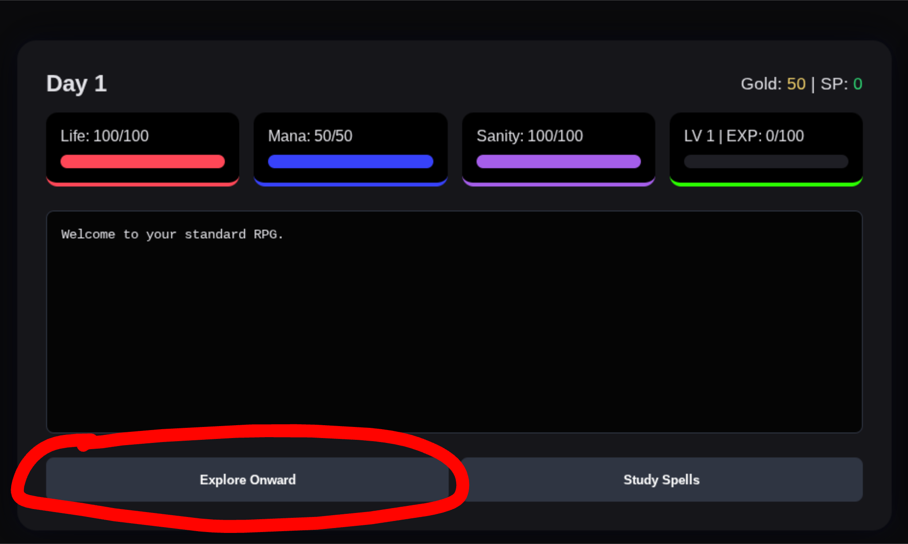

In here, you will find all of the things that you will (mostly) need for your playthrough.

In the crudly drawn red box, you will find your 3 main stats. HP, Mana, and Sanity. HP is kind of obvious. If it reaches 0, you die. Mana is required to cast spells. You gain a certain amount of mana back each day. Sanity is important for mana. If your sanity reaches 0, nothing happens. However when you click to go to the next day, you lose a lot of mana.

In the red circle, you will find the EXP bar, which also relates to your LV. Each LV has a certain threshold to get to. Once you level up, you gain a certain amount of each stat, and you will also gain a skill point.

In the red circle, you will find the log box. In here, you will find the text which tells you what happens. It is also the most important part of the game, as most of the game's dialog comes from here. Pay attention to it.

If you click this button, it will bring you to the screen where you can buy new spells, for skill points (SP). Different spells are used for different things. Spells also scale with player LV.

If you click this button, you will explore onwards. You could fight an enemy, find a shop, gain some money, or some other things. It really depends on your luck.
